Buildings 229
Sort
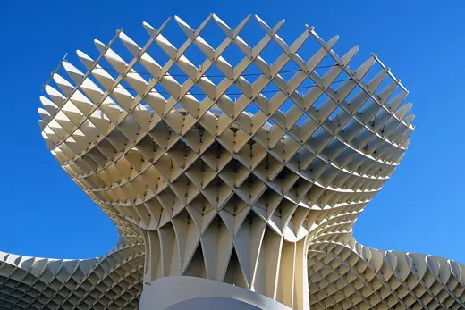
Metropol Parasol2011 · Seville Säynätsalo Town Hall1952 · Jyväskylä
Säynätsalo Town Hall1952 · Jyväskylä Helsinki Central Library Oodi2018 · Helsinki
Helsinki Central Library Oodi2018 · Helsinki Thorncrown Chapel1980 · Eureka Springs
Thorncrown Chapel1980 · Eureka Springs Kilden Performing Arts Centre2012 · Kristiansand
Kilden Performing Arts Centre2012 · Kristiansand Art Gallery of Ontario2008 · Toronto
Art Gallery of Ontario2008 · Toronto Asakusa Culture Tourist Information Center2012 · Tokyo
Asakusa Culture Tourist Information Center2012 · Tokyo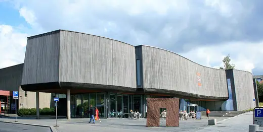
Lillehammer Art Museum1992 · Lillehammer Villa Fallet1907 · La Chaux-de-Fonds
Villa Fallet1907 · La Chaux-de-Fonds Jim Thompson House1959 · Bangkok
Jim Thompson House1959 · Bangkok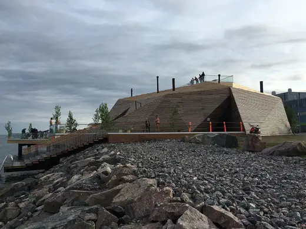
Löyly2016 · Helsinki Gropius House1938 · Lincoln
Gropius House1938 · Lincoln Viipuri Library1935 · Vyborg
Viipuri Library1935 · Vyborg Calgary Central Library2018 · Calgary
Calgary Central Library2018 · Calgary Kempegowda International Airport Terminal 22022 · Bengaluru
Kempegowda International Airport Terminal 22022 · Bengaluru Maison Louis Carré1959 · Bazoches-sur-Guyonne
Maison Louis Carré1959 · Bazoches-sur-Guyonne Fogo Island Inn2013 · Fogo Island
Fogo Island Inn2013 · Fogo Island Harbin Opera House2015 · Harbin
Harbin Opera House2015 · Harbin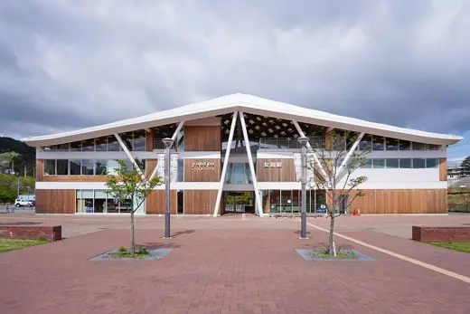
Onagawa Station2015 · Onagawa Vaven2014 · Umea
Vaven2014 · Umea La Seine Musicale2017 · Boulogne-Billancourt
La Seine Musicale2017 · Boulogne-Billancourt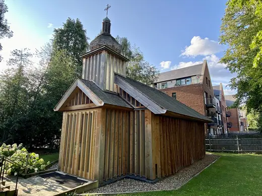
Belarusian Memorial Chapel2016 · London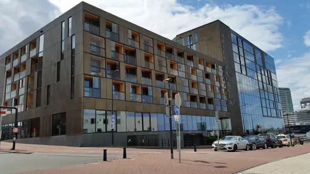
Hotel Jakarta2018 · Amsterdam Queen's Cross Church1899 · Glasgow
Queen's Cross Church1899 · Glasgow Villa Mairea1939 · Noormarkku
Villa Mairea1939 · Noormarkku London Aquatics Centre2011 · London
London Aquatics Centre2011 · London Centre Pompidou-Metz2010 · Metz
Centre Pompidou-Metz2010 · Metz Design Museum2016 · London
Design Museum2016 · London Oita Prefectural Art Museum2015 · Oita
Oita Prefectural Art Museum2015 · Oita Kamppi Chapel2012 · Helsinki
Kamppi Chapel2012 · Helsinki Cathedral of Christ the Light2008 · Oakland
Cathedral of Christ the Light2008 · Oakland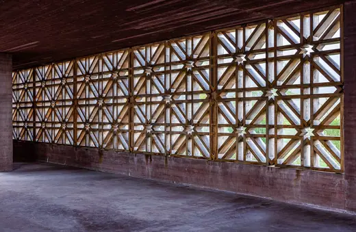
Islamic Cemetery Altach2011 · Altach Weltstadthaus Peek & Cloppenburg2005 · Cologne
Weltstadthaus Peek & Cloppenburg2005 · Cologne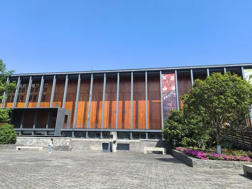
Ningbo Museum of Art2005 · Ningbo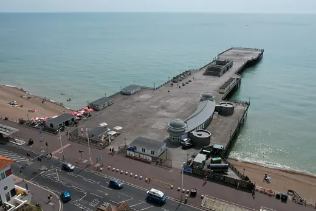
Hastings Pier2016 · Hastings Danish Jewish Museum2004 · Copenhagen
Danish Jewish Museum2004 · Copenhagen Jean-Marie Tjibaou Cultural Centre1998 · Noumea
Jean-Marie Tjibaou Cultural Centre1998 · Noumea Japan National Stadium2019 · Tokyo
Japan National Stadium2019 · Tokyo Boa Nova Tea House1963 · Leça da Palmeira
Boa Nova Tea House1963 · Leça da Palmeira London Velodrome2011 · London
London Velodrome2011 · London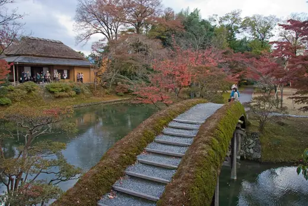
Katsura Imperial Villa17th c. · Kyoto Shakespeare's Globe1997 · London
Shakespeare's Globe1997 · London Museum of Modern Literature2006 · Marbach am Neckar
Museum of Modern Literature2006 · Marbach am Neckar Cuvilliés Theatre1753 · Munich
Cuvilliés Theatre1753 · Munich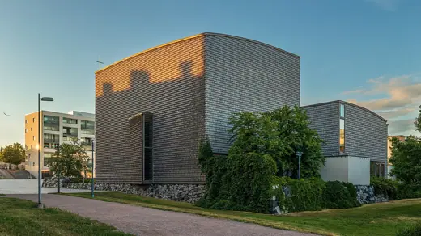
Viikki Church2005 · Helsinki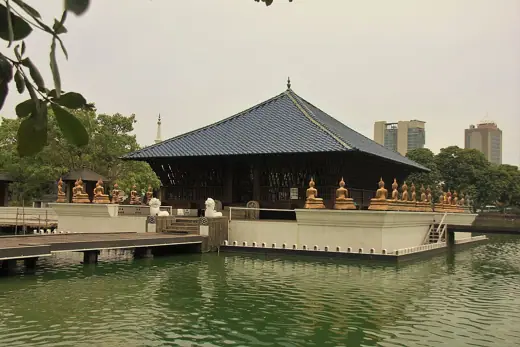
Seema Malaka1976 · Colombo Patan Museum1997 · Lalitpur
Patan Museum1997 · Lalitpur